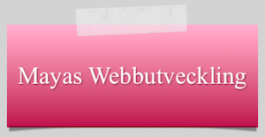
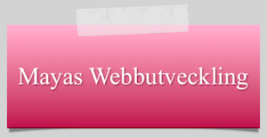

Mayas hemsida!
Följ min utveckling inom webbdesign! Jag gör den här hemsidan på webbutvecklings kursen på teknikprogrammet
Bildkälla: Skapad av Tomas Arad
2006-10-09 Licens: CC0

Följ min utveckling inom webbdesign! Jag gör den här hemsidan på webbutvecklings kursen på teknikprogrammet
Bildkälla: Skapad av Tomas Arad
2006-10-09 Licens: CC0
